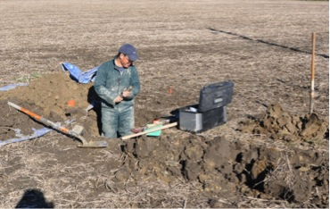
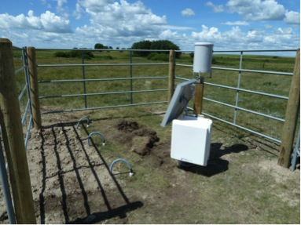

About the AAFC RISMA Portal
About the Portal
Soil moisture is a critical variable in agri-environmental monitoring as it often determines rates of crop growth and productivity, rates of soil biogeochemical processes that impact soil fertility and determines boundary layer conditions that drive meteorological processes. In 2010 and 2011, Agriculture and Agri-Food Canada (AAFC), with collaboration from Environment Canada, established three in situ monitoring networks near Kenaston SK, Carman MB and Casselman ON as part of the Sustainable Agriculture Environmental Systems (SAGES) project titled Earth Observation Information on Crops and Soils for Agri-Environmental Monitoring in Canada. The near real time in situ soil moisture/temperature and precipitation data from these three networks are used to calibrate and validate remote sensing and modelled soil moisture products. By 2014, most of the in situ stations in the Saskatchewan and Manitoba networks will be equipped with additional meteorological sensors to complement the existing data with air temperature, relative humidity, wind speed and wind direction.
Acknowledgements: AAFC acknowledges the land owners for permission to use their land for stations and surveys; Environment Canada for site maintenance, site collaboration and technical support; University of Guelph and University of Manitoba for technical support; University of Saskatchewan for site collaboration; and University of Calgary for web site support.
Data on the Portal
The RISMA Portal provides web-based access to soil moisture data collected by AAFC. It does this using open standards such as OGC SOS. This data is then cached and near real-time observations can be viewed in an interactive web page for the various locations.
You can also retrieve historical observations for one or multiple sensors, and view that data in an interactive JavaScript chart. This makes it easy to browse and see data trends without having to import the data into a data processing application.
More Information
AAFC has continued the RISMA project and is now hosting the data and project on their own website.